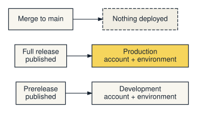
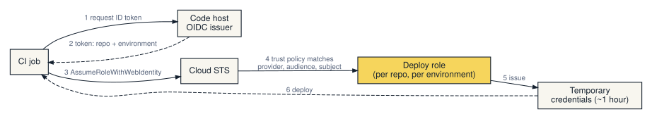

CI/CD / Platform
Shared pipeline foundations
What every pipeline relies on: how a release maps to an environment, how CI proves its identity to the cloud, and which controls protect the supply chain.
The release is the deployment decision

Figure 1. Release convention
- The deploy job checks out the release tag, so what ships is exactly what was tagged and reviewed.
- Merge to main deploys nothing for applications. Infrastructure is the exception: it applies on merge, behind an environment approval, because the plan was reviewed on the PR.
Identity to the cloud, with no stored keys

Figure 2. OIDC token exchange
- Each repository gets its own role per environment. The trust policy matches the token subject exactly (repository plus environment), so a pull-request run, a fork or another environment cannot assume it.
- Dev and prod are different accounts with different roles. A dev release cannot write to production.
Repository protection
Branch protection is applied by a workflow that re-applies it on every push to main, so the rules cannot drift from what the repository says.
| Rule | Setting |
|---|---|
| Status checks | Up to date with main plus the repository checks |
| Reviews | One approval, code-owner review, stale approvals dismissed |
| History | Linear history, no force pushes, no deletions |
| Admins | Rules apply to administrators too |
Quality gates
| Gate | Blocks merge |
|---|---|
| Build, typecheck, lint, format, unit tests | Yes |
| End-to-end tests (frontends) | Yes |
| Static analysis and coverage | Check must run; quality gate reported |
| AI-assisted code review | No, comments only |
| Image scan and patch | Yes, in the deploy path |
| Terraform plan, no-op import guard | Yes |
Supply chain
- Dependency updates are grouped and automated; installs use lockfiles and skip install scripts in sensitive jobs.
- Workflow permissions are granted per job, not at workflow level.
- Build tokens go in as secret files, never arguments, so they are not stored in image layers.
- Shared workflows are consumed by tag, so a change reaches a repository only when it chooses to upgrade.
- Open items on the roadmap: pin every third-party action to a commit SHA, and retire the one remaining long-lived-key workflow.
Generalized write-up. No client or employer identifiers.